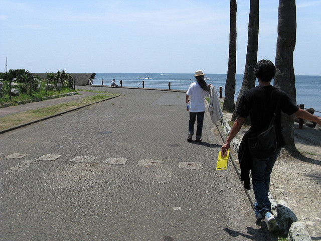
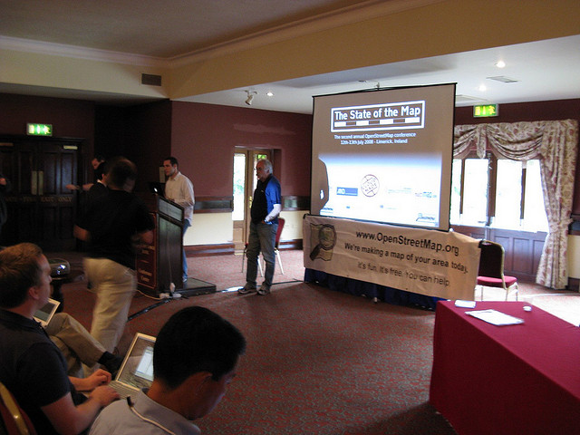
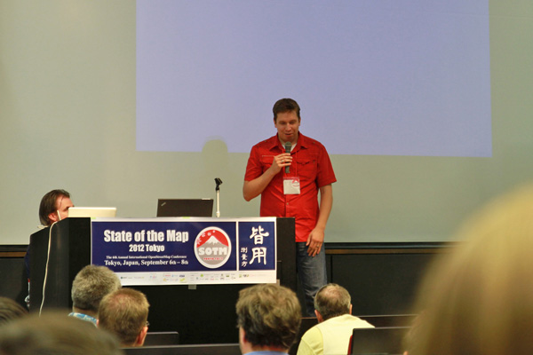

OpenStreetMap Foundation Japan 2周年によせて
はじまり〜日本への普及(1)
- ２００４年、UCLのSteave Coastが、PCとGPSをリュックに背負って、ロンドンの町を徘徊
- ２００６年11月 CNET JapanにおいてOpenStreetMap を紹介する翻訳記事を掲載
- ２００７年２月２２日 GIS NEXT EXPRESS Mail Magazine vol.105でご紹介
- ８月 小江戸LinuxユーザグループにおいてDebianJPの岩松さんが、OpenStreetMapの活動を紹介
CNET japan

GIS Next Express
┏━━━━━━━━━━━━━━━━━━━━━━━━━━━━━━━━━━ ■■■■■【５】編集部便り ┗━━━━━━━━━━━━━━━━━ ┗━━━━━━━━━━━━━━━━━━━━━━━━━━━━━━━━━
“地図は自分で作るもの”
Open Street Map（OSM）をご存知だろうか。英国から始まったオープンなロー ドマップ作り運動だ。市民のボランティアがGPSで記録した道路のデータを自 由にアップロードしたり編集したりして都市のマップを作り上げ、それを著作 権フリーで公開する。２００４年の夏にロンドンから始まったこのプロジェク トは、次第にヨーロッパの各都市に広がっていき、現在ではおよそ４０の国の １００近い都市で、５０００人もの人々がマップ作りに参加している。
つづき
（略） たしかに、作成されたマップの精度については保証されない。だが、言い換え れば、精度に不満を覚えた人がそれを修正する自由は保証されている。つまり、 ユーザのニーズに即した精度が確保される仕組みだといえようか。OSMでは、 ２００８年半ばには英国全土の地図が完成し、さらに欧州全域へとカバーエリ アを広げていく予定だという。 (略）
つづき
GPSやWeb技術を利用してグローバルな規模で地図の共同制作を展開するこの OSM、とても興味深いのだが、どういうわけか日本ではまったく注目されてお らず、マップコミュニティも存在しない。理由はいくつかあるだろうが、やは り日本では国土地理院が国土数値情報や数値地図などを無償公開していること から、ユーザがそれほど地図データの入手に困っていないということが大きい のだろう。
つづき
だが、このプロジェクトの面白さは地図をめぐる権利問題にとどまらないもの がある。つまり、“地図は自分で作るもの”という文化が、こうした活動を通 じて広がっていくかもしれないということである。情報技術の進歩によって、 地理情報や位置情報の取得、処理、加工、流通が容易になったため、これから は市民が必要な地図を（コミュニティを通じて）自分で作成し、紙や携帯電話 やカーナビなどに入れて利用する時代がくるかもしれないということだ（もち ろん、より専門的な用途に向けた高精度な地図への需要はなくならない）。し かも、地図作成のプロセスにおけるジオコミュニケーションの楽しさは、さら に多くの人々を地図の世界に呼び寄せていく可能性がある。
つづき
その意味で、日本にもOSMのコミュニティができないかと思っている。誰か、 始めませんか？
Open Street Map http://wiki.openstreetmap.org/
【編集長 岩見 一太】
Reference
- CNET japan: http://japan.cnet.com/news/media/20314487/
- GIS Next Express: http://melma.com/backnumber_77371_3558595/
はじまり〜日本への普及(2)
- ２００７年１２月７日 三浦がGPS購入してOSMにアカウント登録
- ２００７年１２月末 Wiki翻訳を加速
- ２００８年１月 小江戸Linuxユーザグループにおいて、三浦から活動開始を報告
- 飯能ケーブルTVより コミュニティむけサーバ提供の申し出
- ３月１１日 OSM.jp サイト開設
- 同日、日経BP ITproサイトにて、紹介される
- ３月１２日 OpenStreetMap talk-ja メーリングリスト開始
- 最初の投稿は...
最初の投稿
2008年 3月 12日 (水) 16:20:27 GMT
はじめまして。田口です。
送信テストがてら、自己紹介メールを送信します。
openstreetmap.org には先週末アカウントを登録したばかりで、 現在のところテスト的に auの携帯を使って地図作成にチャレンジ してみたばかりなのですが、予想以上にはまりそうだったので、 現在「コメットDL/3」という GPS Data Logger を注文中です。
住まいは東京ですが、出身は北海道なので、今度帰省のする際には たくさんデータを採ってこようともくろんでおります。
よろしくお願いします。
日経BP ITPro

Reference
- http://itpro.nikkeibp.co.jp/article/NEWS/20080311/296000/
- http://lists.openstreetmap.org/pipermail/talk-ja/2008-March/000000.html
第２回マッピングパーティ
＠鎌倉

SotM 2008 in アイルランド

数年が立ち
商用活用の萌芽

一般社団法人設立

Reference
- http://techwave.jp/archives/51607708.html
Yahoo!Japanとの連携

そして震災
sinsai.info

商用活用の展開
- 2012年 3月 iOS版iPhotoでOpenStreetMapの地図データを採用

Yahoo! japanも

その他
- 2012年３月 FourSquareで採用へ
- 2012年 4月 ウィキペディア、Google Mapsの代わりにOpenStreetMapを採用へ
State of the Map 2012

OdbLへ切り替え完了

iOS 6事件とか
そして今日
皆様と共に、この２年間の振り返りと、今後の想いを共有しましょう